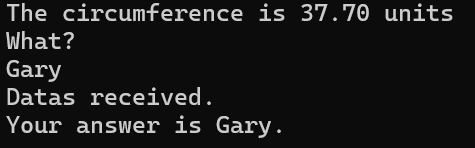

Events
index.js
// JavaScript Document
// Max Reitmayer
// adding event module
const eventEmitter = require('events');
// allows you to make events
const customEmitter = new eventEmitter();
//adding readline module
const readline = require('readline');
// allows user inputs from readline
const rl = readline.createInterface(process.stdin, process.stdout);
//customEmitter.on('mess', ()=> {
// console.log(`Data received.`);
//});
customEmitter.on('mess', (radius) => {
if (isNaN(radius)) {
console.log('sorry, couldn't figure out the circumference! Please give a real number next time!')
} else {
let circRaw = 2*Math.PI*radius;
let circ = circRaw.toFixed(2);
console.log(`The circumference is ${circ} units`)
}
});
//customEmitter.emit('mess');
//makes the 'radius' value 6
customEmitter.emit('mess', 6);
// asks the question, then allows you to give an input
rl.question('What? n', (ans) => {
console.log(`Datas received.`);
console.log(`Your answer is ${ans}.`);
rl.close();
});
This code is creating an event. One of the events is triggered as soon as you run the code, the other you need an input for. For the one that is automatically triggered, the code is asking for the circumference of a circle. We use customEmitter.emit('mess', 6) to emit that code. The 6 is what the code uses for the radius.
For the user input part of code, we use readline. We have it ask the question, then the user inputs the data in the code.
Results
The code first shows the circumference, then asks the question, and I put "Gary" as a response, then the code tells you the answer is Gary